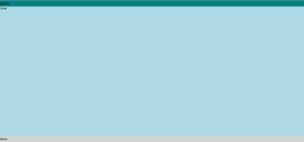
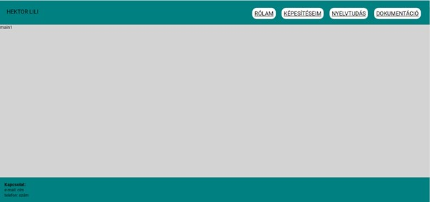

Elsőként az oldal layoutját terveztem meg:

Ezután megterveztem a fejlécet és a láblécet, melyek minden oldalon ugyanúgy néznek ki.

Miután ezzel megvoltam, megírtam az egyes oldalakon szereplő szövegeket, és hozzáválogattam a képeket.
Ezután meghatároztam ezeknek a pozícióját az oldalon, és elhelyeztem mindent.
Ezután már csak az esztétika volt hátra. Megváltoztattam az oldalon szereplő színeket, néhol a pozíciókat, valamint beállítottam, hogy az egyes oldalakon az aktuális oldal alcíme más színnel jelenjen meg.
Utolsóként pedig megírtam ezt a dokumentációt.
Az portfóliót teljes mértékben a Teams csoportban közzétett lejátszási lista alapján készítettem el.